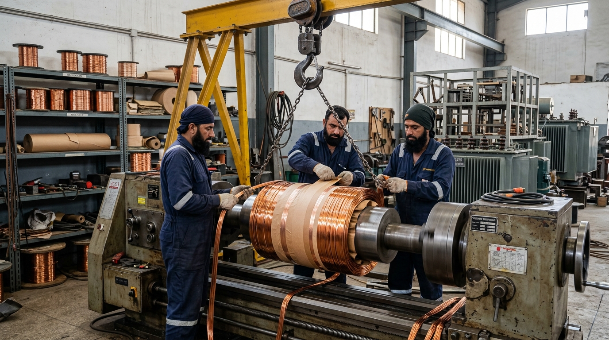

<!DOCTYPE html>
<html lang="en">
<head>
<!-- Google tag (gtag.js) -->
<script async src="https://www.googletagmanager.com/gtag/js?id=GT-MK4LGQ9D"></script>
<script>
  window.dataLayer = window.dataLayer || [];
  function gtag(){dataLayer.push(arguments);}
  gtag('js', new Date());

  gtag('config', 'GT-MK4LGQ9D');
</script>
<!-- Microsoft Clarity -->
<script type="text/javascript">
    (function(c,l,a,r,i,t,y){
        c[a]=c[a]||function(){(c[a].q=c[a].q||[]).push(arguments)};
        t=l.createElement(r);t.async=1;t.src="https://www.clarity.ms/tag/"+i;
        y=l.getElementsByTagName(r)[0];y.parentNode.insertBefore(t,y);
    })(window, document, "clarity", "script", "x1wrvodwit");
</script>
<meta charset="UTF-8">
<link rel="icon" type="image/png" href="/images/transfoline_logo-removebg-preview.png">
<link rel="apple-touch-icon" href="/images/transfoline_logo-removebg-preview.png">
<meta name="viewport" content="width=device-width, initial-scale=1.0">

<!-- Primary SEO -->
<title>Transformer Rewinding Cost Lahore | 2026 Price Guide</title>
<meta name="description" content="Complete 2026 price guide for transformer rewinding in Lahore. Cost breakdown in PKR for 50 kVA to 2500 kVA, copper weight calculations, labor & test bays.">
<meta name="keywords" content="transformer rewinding cost Lahore, transformer rewinding price Pakistan, 500 kva transformer rewinding cost Lahore, 1000 kva transformer rewinding price, copper rewinding cost transformer Pakistan, transformer repair price list Lahore">
<meta name="robots" content="index, follow, max-snippet:-1, max-image-preview:large, max-video-preview:-1">
<meta name="author" content="TransfoLine Electrical Engineering Team">
<link rel="canonical" href="https://transfoline.com.pk/blog/transformer-rewinding-cost-lahore-price-guide.html">

<!-- Geo / Regional -->
<meta name="geo.region" content="PK-PB">
<meta name="geo.placename" content="Lahore">
<meta name="geo.position" content="31.4504;74.3587">
<meta name="ICBM" content="31.4504, 74.3587">
<meta name="language" content="English">

<!-- Open Graph -->
<meta property="og:type" content="article">
<meta property="og:site_name" content="TransfoLine">
<meta property="og:title" content="Transformer Rewinding Cost in Lahore (2026 Price & Turnaround Guide)">
<meta property="og:description" content="Complete 2026 price guide for transformer rewinding in Lahore. Cost breakdown in PKR for 50 kVA to 2500 kVA, copper weight calculations, labor & test bays.">
<meta property="og:url" content="https://transfoline.com.pk/blog/transformer-rewinding-cost-lahore-price-guide.html">
<meta property="og:image" content="https://transfoline.com.pk/images/transfoline-copper-coil-rewinding-workshop.jpg">
<meta property="og:locale" content="en_PK">
<meta property="article:published_time" content="2026-09-02T12:00:00+05:00">
<meta property="article:modified_time" content="2026-09-02T12:00:00+05:00">
<meta property="article:author" content="TransfoLine Electrical Engineering Team">
<meta property="article:section" content="Pricing">

<!-- Twitter Card -->
<meta name="twitter:card" content="summary_large_image">
<meta name="twitter:title" content="Transformer Rewinding Cost in Lahore (2026 Price & Turnaround Guide)">
<meta name="twitter:description" content="Complete 2026 price guide for transformer rewinding in Lahore. Cost breakdown in PKR for 50 kVA to 2500 kVA, copper weight calculations, labor & test bays.">
<meta name="twitter:image" content="https://transfoline.com.pk/images/transfoline-copper-coil-rewinding-workshop.jpg">

<!-- Structured Data: BlogPosting & FAQPage -->
<script type="application/ld+json">
{
  "@context": "https://schema.org",
  "@type": "BlogPosting",
  "mainEntityOfPage": {
    "@type": "WebPage",
    "@id": "https://transfoline.com.pk/blog/transformer-rewinding-cost-lahore-price-guide.html"
  },
  "headline": "Transformer Rewinding Cost in Lahore (2026 Price & Turnaround Guide)",
  "description": "Complete 2026 price guide for transformer rewinding in Lahore. Cost breakdown in PKR for 50 kVA to 2500 kVA, copper weight calculations, labor & test bays.",
  "image": "https://transfoline.com.pk/images/transfoline-transformer-repair.webp",
  "author": {
    "@type": "Organization",
    "name": "TransfoLine Electrical Engineering Team",
    "url": "https://transfoline.com.pk"
  },
  "publisher": {
    "@type": "Organization",
    "name": "TransfoLine",
    "logo": {
      "@type": "ImageObject",
      "url": "https://transfoline.com.pk/images/transfoline-logo.webp"
    }
  },
  "datePublished": "2026-09-02T12:00:00+05:00",
  "dateModified": "2026-09-02T12:00:00+05:00"
}
</script>

<script type="application/ld+json">
{
  "@context": "https://schema.org",
  "@type": "FAQPage",
  "mainEntity": [
    {
      "@type": "Question",
      "name": "How much does it cost to rewind a 500 kVA transformer in Lahore?",
      "acceptedAnswer": {
        "@type": "Answer",
        "text": "In 2026, complete 3-phase rewinding of a 500 kVA 11kV/415V distribution transformer typically costs between PKR 520,000 and PKR 680,000 using 99.99% pure electrolytic copper wire, Class H insulation, new gaskets, vacuum oven baking, and full test bay validation. If only one coil limb is damaged and the remaining two phases are healthy, a single-limb repair ranges between PKR 280,000 and PKR 360,000."
      }
    },
    {
      "@type": "Question",
      "name": "Can I offset rewinding costs with the scrap copper from my burnt transformer?",
      "acceptedAnswer": {
        "@type": "Answer",
        "text": "Yes, absolutely. We extract the old burnt copper coils in front of your technical representative, weigh the scrap on calibrated digital scales, and credit the full prevailing market value (typically PKR 2,200 to 2,500 per kg) directly against your repair invoice, reducing your final cash payment by 30% to 50%."
      }
    },
    {
      "@type": "Question",
      "name": "How long does transformer rewinding take at your Raiwind Road workshop?",
      "acceptedAnswer": {
        "@type": "Answer",
        "text": "Standard turnaround is 48 to 72 hours for transformers up to 630 kVA, and 3 to 5 days for 1000 kVA to 2500 kVA units. For urgent factory emergencies, our 24-hour expedited dual-shift service can complete rewinding in 24 to 36 hours. Additionally, we can supply a temporary loaner unit during the repair period."
      }
    },
    {
      "@type": "Question",
      "name": "Why are some rewinding quotes from Bund Road 30% cheaper than TransfoLine?",
      "acceptedAnswer": {
        "@type": "Answer",
        "text": "Informal workshops cut costs by using recycled scrap copper wire with micro-cracks, substituting copper with cheaper aluminium, using low-grade packaging paper instead of electrical Kraft/Nomex insulation, and skipping the 16-hour vacuum oven baking cycle. This results in high internal heat losses and premature burnout within months."
      }
    },
    {
      "@type": "Question",
      "name": "Do you provide a warranty on rewound transformers?",
      "acceptedAnswer": {
        "@type": "Answer",
        "text": "Yes. Every transformer rewound at TransfoLine is backed by a 12-Month Comprehensive Replacement Service Warranty. If an electrical winding fault occurs under rated load conditions during the warranty period, we repair or replace the affected coils free of charge."
      }
    }
  ]
}
</script>

<script type="application/ld+json">
{
  "@context": "https://schema.org",
  "@type": "BreadcrumbList",
  "itemListElement": [
    {"@type": "ListItem", "position": 1, "name": "Home", "item": "https://transfoline.com.pk/"},
    {"@type": "ListItem", "position": 2, "name": "Blog", "item": "https://transfoline.com.pk/blog.html"},
    {"@type": "ListItem", "position": 3, "name": "Transformer Rewinding Cost in Lahore (2026 Price & Turnaround Guide)"}
  ]
}
</script>

<link rel="stylesheet" href="../styles.css">
</head>
<body>

<!-- ============ NAV ============ -->
<header class="nav" id="nav">
  <div class="sheet nav__in">
    <a href="../index.html" class="brand" aria-label="TransfoLine home">
      
    </a>
    <nav class="nav__links" aria-label="Primary">
      <a href="../index.html">Home</a>
      <a href="../index.html#why">Why Us</a>
      <div class="nav__dropdown">
        <a href="../index.html#services" class="nav__drop-trigger">Services <span class="nav__arrow">▾</span></a>
        <div class="nav__drop-menu mega-menu">
          <!-- COLUMN 1: TRANSFORMERS -->
          <div class="mega-col">
            <div class="mega-col__title">Transformers</div>
            <div class="mega-col__list">
              <a href="../new-used-transformers.html" class="mega-link">New &amp; Certified-Used Transformers</a>
              <a href="../solar-inverter-transformers-epc.html" class="mega-link">Solar Inverter Step-Up Transformers</a>
              <a href="../steel-furnace-transformers.html" class="mega-link">Steel Furnace Transformers (OFWF)</a>
              <a href="../dry-type-cast-resin-transformers.html" class="mega-link">Cast Resin Dry-Type Transformers</a>
              <a href="../high-voltage-power-transformers.html" class="mega-link">High-Voltage Power Transformers (MVA)</a>
              <a href="../spare-parts.html" class="mega-link">Transformer Spare Parts &amp; Supplies</a>
            </div>
          </div>

          <!-- COLUMN 2: ENGINEERING SERVICES -->
          <div class="mega-col">
            <div class="mega-col__title">Engineering Services</div>
            <div class="mega-col__list">
              <a href="../turnkey-substation-epc.html" class="mega-link">Turnkey Substation EPC (11kV/132kV)</a>
              <a href="../transformer-repair.html" class="mega-link">Transformer Repair &amp; Rewinding</a>
              <a href="../transformer-repair-lahore.html" class="mega-link" style="color:var(--accent-ink);font-weight:600;">Transformer Repair Lahore (24/7) ★</a>
              <a href="../oil-dehydration.html" class="mega-link">Oil Dehydration &amp; BDV Filtration</a>
              <a href="../preventive-maintenance-amc.html" class="mega-link">Maintenance &amp; AMC Contracts</a>
              <a href="../ht-lt-panel-installation.html" class="mega-link">HT / LT Panel Installation</a>
            </div>
          </div>

          <!-- COLUMN 3: SOLAR & RENEWABLE -->
          <div class="mega-col">
            <div class="mega-col__title">Solar &amp; Renewable</div>
            <div class="mega-col__list">
              <a href="../solar-energy-solutions.html" class="mega-link">Commercial &amp; Industrial Solar EPC</a>
              <a href="../solar-panels-inverters-cables.html" class="mega-link">Solar Hardware (Panels, Inverters, Cables)</a>
              <a href="../100kw-solar-system-price-pakistan.html" class="mega-link">100 kW Commercial System</a>
              <a href="../500kw-industrial-solar-system.html" class="mega-link">500 kW Industrial Substation</a>
              <a href="../1mw-solar-power-plant-pakistan.html" class="mega-link">1 MW to 5 MW Solar Power Plants</a>
              <a href="../ev-charging-solutions-pakistan.html" class="mega-link">Commercial EV Fast Charging</a>
            </div>
          </div>

          <!-- COLUMN 4: TESTING & DIAGNOSTICS -->
          <div class="mega-col">
            <div class="mega-col__title">Testing &amp; Diagnostics</div>
            <div class="mega-col__list">
              <a href="../insulation-resistance-testing.html" class="mega-link">Insulation Resistance Testing (Megger)</a>
              <a href="../transformer-testing.html" class="mega-link">Transformer Diagnostic Testing (DGA)</a>
              <a href="../high-voltage-testing.html" class="mega-link">High Voltage (Hipot) Testing</a>
              <a href="../protection-relay-testing.html" class="mega-link">Protection Relay Testing</a>
              <a href="../thermal-imaging.html" class="mega-link">Thermal Imaging Inspection (FLIR)</a>
              <a href="../circuit-breaker-testing.html" class="mega-link">Circuit Breaker Testing</a>
            </div>
          </div>
        </div>
      </div>
      <a href="../calculators.html">Calculators</a>
      <a href="../index.html#process">Process</a>
      <a href="../index.html#faq">FAQ</a>
      <a href="../contact-us.html">Contact</a>
    </nav>
    <div class="nav__right">
      <a href="tel:+923144641288" class="nav__tel"><span class="sq" aria-hidden="true"></span>0314 4641288</a>
      <a href="../contact-us.html" class="btn btn--solid btn--sm">Get Quote</a>
      <button class="nav__burger" id="burger" aria-label="Menu" aria-expanded="false"><span></span><span></span><span></span></button>
    </div>
  </div>

  <!-- Mobile Menu Drawer -->
  <div class="nav__mobile" id="mobileMenu">
    <div class="nav__mobile-quick">
      <a href="../index.html" class="nav__mobile-item">Home</a>
      <a href="../index.html#why" class="nav__mobile-item">Why Us</a>
      <a href="../calculators.html" class="nav__mobile-item nav__mobile-item--featured">
        <span>⚡ Engineering Calculators</span>
        <span class="nav__mobile-pill">Interactive</span>
      </a>
      <a href="../blog.html" class="nav__mobile-item">📰 Blog &amp; Knowledge Hub</a>
    </div>

    <div class="nav__mobile-section-title">Services &amp; Equipment</div>
    <div class="nav__mob-accordion">
      <button class="nav__mob-acc-trigger" aria-expanded="false">
        <span class="nav__mob-acc-title">
          <span class="nav__mob-acc-icon">⚡</span>
          <span>Transformers</span>
        </span>
        <span class="nav__mob-acc-badge">6 Products <span class="nav__mob-arrow">▾</span></span>
      </button>
      <div class="nav__mob-acc-panel">
        <a href="../new-used-transformers.html">New &amp; Certified-Used Transformers</a>
        <a href="../solar-inverter-transformers-epc.html">Solar Inverter Step-Up Transformers</a>
        <a href="../steel-furnace-transformers.html">Steel Furnace Transformers (OFWF)</a>
        <a href="../dry-type-cast-resin-transformers.html">Cast Resin Dry-Type Transformers</a>
        <a href="../high-voltage-power-transformers.html">High-Voltage Power Transformers (MVA)</a>
        <a href="../spare-parts.html">Transformer Spare Parts &amp; Supplies</a>
      </div>
    </div>

    <div class="nav__mob-accordion">
      <button class="nav__mob-acc-trigger" aria-expanded="true">
        <span class="nav__mob-acc-title">
          <span class="nav__mob-acc-icon">🛠️</span>
          <span>Engineering Services</span>
        </span>
        <span class="nav__mob-acc-badge">6 Services <span class="nav__mob-arrow">▾</span></span>
      </button>
      <div class="nav__mob-acc-panel">
        <a href="../transformer-repair-lahore.html" style="font-weight:700;color:var(--accent-ink);">Transformer Repair Lahore (24/7) ★</a>
        <a href="../transformer-repair.html">National Transformer Repair &amp; Rewinding</a>
        <a href="../turnkey-substation-epc.html">Turnkey Substation EPC (11kV/132kV)</a>
        <a href="../oil-dehydration.html">Oil Dehydration &amp; BDV Filtration</a>
        <a href="../preventive-maintenance-amc.html">Maintenance &amp; AMC Contracts</a>
        <a href="../ht-lt-panel-installation.html">HT / LT Panel Installation</a>
      </div>
    </div>

    <div class="nav__mob-accordion">
      <button class="nav__mob-acc-trigger" aria-expanded="false">
        <span class="nav__mob-acc-title">
          <span class="nav__mob-acc-icon">☀️</span>
          <span>Solar &amp; Renewable</span>
        </span>
        <span class="nav__mob-acc-badge">6 Solutions <span class="nav__mob-arrow">▾</span></span>
      </button>
      <div class="nav__mob-acc-panel">
        <a href="../solar-energy-solutions.html">Commercial &amp; Industrial Solar EPC</a>
        <a href="../solar-panels-inverters-cables.html">Solar Hardware (Panels, Inverters, Cables)</a>
        <a href="../100kw-solar-system-price-pakistan.html">100 kW Commercial Solar System</a>
        <a href="../500kw-industrial-solar-system.html">500 kW Industrial Substation</a>
        <a href="../1mw-solar-power-plant-pakistan.html">1 MW to 5 MW Solar Power Plants</a>
        <a href="../ev-charging-solutions-pakistan.html">Commercial EV Fast-Charging Stations</a>
      </div>
    </div>

    <div class="nav__mob-accordion">
      <button class="nav__mob-acc-trigger" aria-expanded="false">
        <span class="nav__mob-acc-title">
          <span class="nav__mob-acc-icon">🔬</span>
          <span>Testing &amp; Diagnostics</span>
        </span>
        <span class="nav__mob-acc-badge">6 Tests <span class="nav__mob-arrow">▾</span></span>
      </button>
      <div class="nav__mob-acc-panel">
        <a href="../insulation-resistance-testing.html">Insulation Resistance Testing (Megger)</a>
        <a href="../transformer-testing.html">Transformer Diagnostic Testing (DGA)</a>
        <a href="../high-voltage-testing.html">High Voltage (Hipot) Testing</a>
        <a href="../protection-relay-testing.html">Protection Relay Testing</a>
        <a href="../thermal-imaging.html">Thermal Imaging Inspection (FLIR)</a>
        <a href="../circuit-breaker-testing.html">Circuit Breaker Testing</a>
      </div>
    </div>

    <div class="nav__mobile-contact">
      <a href="tel:+923144641288" class="nav__mobile-call"><span class="nav__mobile-call-icon"><svg viewBox="0 0 24 24" fill="none"><path d="M6.62 10.79a15.05 15.05 0 0 0 6.59 6.59l2.2-2.2a1 1 0 0 1 1.01-.24c1.12.37 2.33.57 3.58.57a1 1 0 0 1 1 1V20a1 1 0 0 1-1 1A17 17 0 0 1 3 4a1 1 0 0 1 1-1h3.5a1 1 0 0 1 1 1c0 1.25.2 2.46.57 3.58a1 1 0 0 1-.24 1.01l-2.2 2.2Z" fill="currentColor"/></svg></span>Emergency Call: 0314 4641288</a>
    </div>
  </div>
</header>

<main id="main">
  <!-- Breadcrumb -->
  <div class="sheet">
    <nav class="breadcrumb" aria-label="Breadcrumb">
      <a href="../index.html">Home</a>
      <span class="breadcrumb__sep" aria-hidden="true">/</span>
      <a href="../blog.html">Blog</a>
      <span class="breadcrumb__sep" aria-hidden="true">/</span>
      <span aria-current="page">Transformer Rewinding Cost in Lahore: 2026 Price &amp; Technical Guide</span>
    </nav>
  </div>

  <!-- ============ POST HERO ============ -->
  <section class="post-hero">
    <div class="sheet">
      <div class="post-hero__top">
        <div class="post-hero__meta">
          <span class="blog-card__cat">Pricing</span>
          <span class="blog-card__date">September 2, 2026</span>
          <span class="blog-card__date">15 min read</span>
        </div>
        <h1 style="font-family:var(--cond);font-weight:600;font-size:clamp(30px,4vw,50px);line-height:1.06;letter-spacing:-.01em;max-width:28ch;">Transformer Rewinding Cost in <em>Lahore</em>: 2026 Price &amp; Technical Guide</h1>
        <p class="svc-hero__sub" style="margin-top:20px;">When an industrial transformer burns out, factory directors and CFOs in Lahore must balance the urgent need to restore production against volatile copper raw material prices and opaque repair quotes. Based on current market rates on Raiwind Road and Badami Bagh, this technical cost guide breaks down exact transformer rewinding expenses in Pakistani Rupees (PKR) for ratings from 50 kVA up to 2,500 kVA, detailing copper weight calculations, vacuum baking, insulation grades, and warranty protections.</p>
      </div>
    </div>
    <div class="post-hero__banner">
      
    </div>
  </section>

  <!-- ============ POST BODY ============ -->
  <article class="post-body">
    <!-- Table of Contents -->
    <nav class="post-toc" aria-label="Table of contents">
      <div class="post-toc__title">In This Engineering Guide</div>
      <ol>
        <li><a href="#pricing-benchmark-matrix">2026 Rewinding Price Benchmark Matrix (50 kVA to 2,500 kVA)</a></li>
        <li><a href="#copper-weight-formula">The Engineering Math: Calculating Copper Weight &amp; Material Costs</a></li>
        <li><a href="#cost-components">The 5 Major Cost Components in Professional Transformer Overhaul</a></li>
        <li><a href="#single-vs-three-phase">Single-Phase Repair vs. Complete Three-Phase Coil Replacement</a></li>
        <li><a href="#cheap-vs-factory-grade">Beware Cheap Bund Road Rewinding: Hidden Dangers of Scrap Wire</a></li>
        <li><a href="#turnaround-timeline">Standard Turnaround Times &amp; Rush Emergency Expediting</a></li>
        <li><a href="#warranty-test-bay">Test Bay Validation Protocols &amp; 12-Month Service Warranty</a></li>

        <li><a href="#faq">Frequently Asked Questions</a></li>
      </ol>
    </nav>

    <!-- Visual Demonstration Plate 1 -->
    <figure style="margin:28px 0;">
      
      <figcaption style="font-family:var(--mono);font-size:12px;color:var(--ink-3);margin-top:8px;">Figure 1: De-tanking, core inspection, and 99.99% pure electrolytic copper coil rewinding at TransfoLine workshop, Lahore.</figcaption>
    </figure>


  <!-- Section 1 -->
  <h2 id="pricing-benchmark-matrix">2026 Rewinding Price Benchmark Matrix (50 kVA to 2,500 kVA)</h2>
  <p>In Lahore's industrial electrical engineering sector, transformer rewinding costs are heavily influenced by prevailing international and local copper rates (LME rates converted to PKR per kilogram), imported insulating material tariffs, and high-voltage test bay energy expenses. Unlike informal roadside repair shops on Bund Road that provide arbitrary verbal estimates, TransfoLine operates on an open-book, engineering-quantified pricing model.</p>

  <p>The following matrix outlines verified 2026 price ranges for complete high-tension (HT 11kV) and low-tension (LT 400V/415V) coil rewinding using 99.99% pure electrolytic copper wire conforming to WAPDA DDS-84 and IEC 60076 standards:</p>

  <table style="width:100%;border-collapse:collapse;margin:24px 0;font-size:14px;">
    <thead>
      <tr style="background:var(--bg-card);border-bottom:2px solid var(--rule);">
        <th style="padding:12px;text-align:left;">Transformer Rating</th>
        <th style="padding:12px;text-align:left;">Voltage Class</th>
        <th style="padding:12px;text-align:left;">Approx. Copper Weight</th>
        <th style="padding:12px;text-align:left;">Complete 3-Phase Rewind (PKR)</th>
        <th style="padding:12px;text-align:left;">Single-Limb Repair (PKR)</th>
        <th style="padding:12px;text-align:left;">Turnaround Time</th>
      </tr>
    </thead>
    <tbody>
      <tr style="border-bottom:1px solid var(--rule);">
        <td style="padding:10px;"><strong>50 kVA</strong></td>
        <td style="padding:10px;">11kV / 415V</td>
        <td style="padding:10px;">35 – 45 kg</td>
        <td style="padding:10px;font-weight:600;">PKR 110,000 – 160,000</td>
        <td style="padding:10px;">PKR 65,000 – 90,000</td>
        <td style="padding:10px;">24 – 36 Hours</td>
      </tr>
      <tr style="border-bottom:1px solid var(--rule);">
        <td style="padding:10px;"><strong>100 kVA</strong></td>
        <td style="padding:10px;">11kV / 415V</td>
        <td style="padding:10px;">70 – 90 kg</td>
        <td style="padding:10px;font-weight:600;">PKR 180,000 – 250,000</td>
        <td style="padding:10px;">PKR 95,000 – 140,000</td>
        <td style="padding:10px;">24 – 48 Hours</td>
      </tr>
      <tr style="border-bottom:1px solid var(--rule);">
        <td style="padding:10px;"><strong>200 kVA</strong></td>
        <td style="padding:10px;">11kV / 415V</td>
        <td style="padding:10px;">130 – 165 kg</td>
        <td style="padding:10px;font-weight:600;">PKR 280,000 – 380,000</td>
        <td style="padding:10px;">PKR 150,000 – 210,000</td>
        <td style="padding:10px;">36 – 48 Hours</td>
      </tr>
      <tr style="border-bottom:1px solid var(--rule);">
        <td style="padding:10px;"><strong>400 kVA</strong></td>
        <td style="padding:10px;">11kV / 415V</td>
        <td style="padding:10px;">240 – 290 kg</td>
        <td style="padding:10px;font-weight:600;">PKR 450,000 – 580,000</td>
        <td style="padding:10px;">PKR 240,000 – 320,000</td>
        <td style="padding:10px;">48 – 60 Hours</td>
      </tr>
      <tr style="border-bottom:1px solid var(--rule);">
        <td style="padding:10px;"><strong>630 kVA</strong></td>
        <td style="padding:10px;">11kV / 415V</td>
        <td style="padding:10px;">360 – 430 kg</td>
        <td style="padding:10px;font-weight:600;">PKR 620,000 – 780,000</td>
        <td style="padding:10px;">PKR 320,000 – 420,000</td>
        <td style="padding:10px;">48 – 72 Hours</td>
      </tr>
      <tr style="border-bottom:1px solid var(--rule);">
        <td style="padding:10px;"><strong>1,000 kVA</strong></td>
        <td style="padding:10px;">11kV / 415V</td>
        <td style="padding:10px;">520 – 650 kg</td>
        <td style="padding:10px;font-weight:600;">PKR 850,000 – 1,150,000</td>
        <td style="padding:10px;">PKR 450,000 – 590,000</td>
        <td style="padding:10px;">3 – 4 Days</td>
      </tr>
      <tr style="border-bottom:1px solid var(--rule);">
        <td style="padding:10px;"><strong>1,500 kVA</strong></td>
        <td style="padding:10px;">11kV / 415V</td>
        <td style="padding:10px;">780 – 950 kg</td>
        <td style="padding:10px;font-weight:600;">PKR 1,350,000 – 1,750,000</td>
        <td style="padding:10px;">PKR 680,000 – 890,000</td>
        <td style="padding:10px;">4 – 5 Days</td>
      </tr>
      <tr style="border-bottom:1px solid var(--rule);">
        <td style="padding:10px;"><strong>2,500 kVA</strong></td>
        <td style="padding:10px;">11kV / 415V</td>
        <td style="padding:10px;">1,250 – 1,550 kg</td>
        <td style="padding:10px;font-weight:600;">PKR 2,100,000 – 2,800,000</td>
        <td style="padding:10px;">PKR 1,100,000 – 1,450,000</td>
        <td style="padding:10px;">5 – 7 Days</td>
      </tr>
    </tbody>
  </table>

  <p><em>*Note: Prices above include 100% new electrolytic copper winding wire, complete Class H / Nomex layer insulation, new tank perimeter cork gaskets, vacuum oven baking, dielectric transformer oil filtration/top-up, and official test bay certification. Scrapped burnt copper extracted from your unit can be credited directly against the invoice at prevailing market scrap buyback rates (typically PKR 2,200 to 2,500 per kg in 2026), significantly reducing net cash outlay.</em></p>

  <!-- Section 2 -->
  <h2 id="copper-weight-formula">The Engineering Math: Calculating Copper Weight &amp; Material Costs</h2>
  <p>Why does transformer rewinding cost what it does? Copper conductor material accounts for 55% to 65% of the total overhaul bill. Understanding the underlying physical formulas empowers plant managers to audit any rewinding quote.</p>

  <p>For a standard 3-phase, 50Hz, 11kV step-down core-type transformer, the theoretical copper weight ($W_{cu}$) can be estimated using the empirical design formula:</p>

  <div style="background:var(--bg-card);padding:18px;border-left:4px solid var(--accent);margin:20px 0;font-family:monospace;font-size:15px;">
    W_{cu} (kg) pprox k 	imes (	ext{kVA})^{0.75}
  </div>

  <p>Where the constant $k$ ranges between $2.8$ and $3.4$ for distribution transformers built to WAPDA DDS-84 specifications with high-conductivity electrolytic copper conductors. For example, on a 500 kVA unit:</p>
  <ul>
    <li>$W_{cu} pprox 3.1 	imes (500)^{0.75} pprox 3.1 	imes 105.7 pprox 328 	ext{ kg}$</li>
    <li>At an average 2026 virgin magnet-wire price of approximately PKR 3,100 per kilogram (including double-glass or paper insulation wrapping and drawing margins), raw copper material alone totals $	ext{PKR } 328 	imes 3,100 = 	ext{PKR } 1,016,800$.</li>
    <li>However, if the damaged transformer is de-tanked and 310 kg of burnt copper is salvaged at scrap buyback value of PKR 2,300/kg, a scrap credit of $	ext{PKR } 713,000$ is refunded to the client, bringing net copper cost down to roughly PKR 303,800!</li>
  </ul>

  <!-- Section 3 -->
  <h2 id="cost-components">The 5 Major Cost Components in Professional Transformer Overhaul</h2>
  <p>A factory-grade rewinding job involves far more than just wrapping wire around an iron core. A compliant rebuild at our Raiwind Road workshop is divided into five cost centres:</p>

  <h3>1. Precision Conductor Materials (55–65% of cost)</h3>
  <p>We use 99.99% pure oxygen-free high-conductivity (OFHC) electrolytic copper flat strips for LT coils and paper-covered enameled copper round wire for HT coils. Pure copper guarantees minimum resistance ($R = 
ho L/A$), keeping operating heat low and eliminating localized hot spots.</p>

  <h3>2. Solid Dielectric Insulation &amp; Spacers (10–15% of cost)</h3>
  <p>Layers are separated with thermally upgraded Kraft electrical insulation paper (Class A, 105°C) or synthetic aramid Nomex paper (Class H, 180°C). Duct spacers machined from densified laminated wood or high-density pressboard maintain essential vertical cooling channels between the winding layers so cooling oil can circulate via natural convection (ONAN).</p>

  <h3>3. Gaskets, Bushings &amp; Hardware Renewals (5–8% of cost)</h3>
  <p>Every opened transformer requires 100% gasket replacement. We discard brittle old rubber and install oil-resistant Nitrile-bonded cork gaskets (RC-70 grade). We also renew bronze terminal studs, replace cracked HT porcelain bushings, and inspect the off-circuit tap changer (OCTC) roller contacts.</p>

  <h3>4. Vacuum Oven Drying &amp; Dielectric Varnish Baking (10–12% of cost)</h3>
  <p>After winding, the entire core-coil assembly is pre-heated, vacuum-impregnated with high-grade electrical insulating varnish, and baked in a computerized drying chamber at 105°C for 16 to 24 hours. This eliminates all traces of moisture and solidifies the coils against extreme mechanical vibration caused by external short-circuit fault currents.</p>

  <h3>5. High-Voltage Test Bay Certification &amp; Labor (10–15% of cost)</h3>
  <p>Skilled coil winders, overhead crane riggers, and electrical test engineers perform turns-ratio matching, high-voltage withstand tests, core loss measurements, and oil breakdown testing conforming to WAPDA standards.</p>

  <!-- Section 4 -->
  <h2 id="single-vs-three-phase">Single-Phase Repair vs. Complete Three-Phase Coil Replacement</h2>
  <p>When a transformer trips, often only one limb (e.g., Phase V) shows physical flashover or low insulation resistance, while Phases U and W appear intact. Factory owners frequently ask: <em>"Can we save money by rewinding only the damaged phase?"</em></p>

  <p>Here is our technical guidance:</p>
  <ul>
    <li><strong>When Single-Limb Repair is Feasible:</strong> If the transformer is under 5 years old, has suffered an external line lightning surge or terminal bushing flashover, and oil DGA analysis shows zero carbon sludge across the remaining two limbs, replacing only the damaged single coil limb is a safe, economical choice that cuts total repair expense by 40% to 50%.</li>
    <li><strong>When Complete 3-Phase Rewinding is Mandatory:</strong> If the failure was triggered by chronic plant overloading, severe summer overheating, or acidic aged oil, all three phases have experienced identical thermal insulation degradation. Rewinding only one phase in an aged transformer almost guarantees that an adjacent limb will short-circuit within 3 to 6 months. In such cases, full 3-phase replacement is the only responsible engineering path.</li>
  </ul>

  <!-- Section 5 -->
  <h2 id="cheap-vs-factory-grade">Beware Cheap Bund Road Rewinding: Hidden Dangers of Scrap Wire</h2>
  <p>In informal markets around Bund Road, Badami Bagh, or Daroghawala, roadside repair shops frequently quote prices 30% to 40% below established engineering companies. While tempting for cash-strapped businesses, these low bids hide dangerous compromises:</p>
  <ul>
    <li><strong>Aluminium Wire Substitution:</strong> Unscrupulous workshops rewind LT coils with enameled aluminium wire while charging for copper, or use cheap aluminium-wound scrap. Aluminium has 61% the conductivity of copper, causing extreme heating, higher internal resistance, and frequent catastrophic burnouts under heavy summer loads.</li>
    <li><strong>Re-Straightened Scrap Copper:</strong> Instead of virgin electrolytic wire, old burnt copper wire is mechanically pulled through straighteners, annealed over open gas flames, and wrapped in cheap newsprint or low-grade cotton tape. The copper is already brittle and suffers rapid fatigue cracking.</li>
    <li><strong>Skipping Vacuum Oven Baking:</strong> Informal workshops simply paint varnish over the exterior of the coils with a paintbrush and leave the unit in the sun to air-dry. Without a heated vacuum chamber, trapped moisture inside deep winding layers boils into steam when energized, triggering immediate phase-to-ground flashover.</li>
  </ul>

  <!-- Section 6 -->
  <h2 id="turnaround-timeline">Standard Turnaround Times &amp; Rush Emergency Expediting</h2>
  <p>Time is money in industrial production. Here are our standard turnaround timelines at our Raiwind Road facility:</p>
  <ul>
    <li><strong>Standard Overhaul:</strong> 48 to 72 hours for distribution units up to 630 kVA; 3 to 5 days for 1000 kVA to 2500 kVA units.</li>
    <li><strong>24-Hour Emergency Rush Protocol:</strong> We assign dual-shift winding teams working around the clock with accelerated oven drying cycles to deliver completed, certified units in 24 to 36 hours.</li>
    <li><strong>Zero-Downtime Standby Loaner Service:</strong> If even 24 hours of shutdown is unacceptable, we install a temporary loaner transformer from our inventory on Day 1, giving your factory 100% operational capacity while your primary unit is rewound without haste.</li>
  </ul>

  <!-- Section 7 -->
  <h2 id="warranty-test-bay">Test Bay Validation Protocols &amp; 12-Month Service Warranty</h2>
  <p>Every transformer rewound at TransfoLine must successfully pass six routine electrical test bay procedures before leaving our gates:</p>
  <ol>
    <li>Measurement of winding resistance at all tap positions (Micro-ohmmeter)</li>
    <li>Measurement of voltage ratio and check of phase displacement (TTR test)</li>
    <li>Measurement of short-circuit impedance and load loss at rated frequency</li>
    <li>Measurement of no-load loss and excitation current at rated voltage</li>
    <li>Separate source AC withstand voltage test (Hipot testing at 28 kV for 11kV windings)</li>
    <li>Insulation resistance measurement (Megger testing at 5kV DC for 1 minute)</li>
  </ol>
  <p>All completed rewinds are issued an official stamped TransfoLine Test Certificate and backed by our comprehensive <strong>12-Month Replacement Service Warranty</strong>.</p>


    <!-- Visual Demonstration Plate 2 -->
    <figure style="margin:28px 0;">
      
      <figcaption style="font-family:var(--mono);font-size:12px;color:var(--ink-3);margin-top:8px;">Figure 2: Ready-to-dispatch standby loaner distribution transformers at our Raiwind Road yard (50 kVA to 2500 kVA).</figcaption>
    </figure>

    <!-- ============ FAQ SECTION ============ -->
    <h2 id="faq">Frequently Asked Questions</h2>
    <div class="faq-grid" id="faqList" style="margin-top:20px;">
      <details class="faq">
        <summary>
          <span class="faq__c">FAQ</span>
          How much does it cost to rewind a 500 kVA transformer in Lahore?
          <span class="faq__s"></span>
        </summary>
        <p class="faq__a">In 2026, complete 3-phase rewinding of a 500 kVA 11kV/415V distribution transformer typically costs between PKR 520,000 and PKR 680,000 using 99.99% pure electrolytic copper wire, Class H insulation, new gaskets, vacuum oven baking, and full test bay validation. If only one coil limb is damaged and the remaining two phases are healthy, a single-limb repair ranges between PKR 280,000 and PKR 360,000.</p>
      </details>
      <details class="faq">
        <summary>
          <span class="faq__c">FAQ</span>
          Can I offset rewinding costs with the scrap copper from my burnt transformer?
          <span class="faq__s"></span>
        </summary>
        <p class="faq__a">Yes, absolutely. We extract the old burnt copper coils in front of your technical representative, weigh the scrap on calibrated digital scales, and credit the full prevailing market value (typically PKR 2,200 to 2,500 per kg) directly against your repair invoice, reducing your final cash payment by 30% to 50%.</p>
      </details>
      <details class="faq">
        <summary>
          <span class="faq__c">FAQ</span>
          How long does transformer rewinding take at your Raiwind Road workshop?
          <span class="faq__s"></span>
        </summary>
        <p class="faq__a">Standard turnaround is 48 to 72 hours for transformers up to 630 kVA, and 3 to 5 days for 1000 kVA to 2500 kVA units. For urgent factory emergencies, our 24-hour expedited dual-shift service can complete rewinding in 24 to 36 hours. Additionally, we can supply a temporary loaner unit during the repair period.</p>
      </details>
      <details class="faq">
        <summary>
          <span class="faq__c">FAQ</span>
          Why are some rewinding quotes from Bund Road 30% cheaper than TransfoLine?
          <span class="faq__s"></span>
        </summary>
        <p class="faq__a">Informal workshops cut costs by using recycled scrap copper wire with micro-cracks, substituting copper with cheaper aluminium, using low-grade packaging paper instead of electrical Kraft/Nomex insulation, and skipping the 16-hour vacuum oven baking cycle. This results in high internal heat losses and premature burnout within months.</p>
      </details>
      <details class="faq">
        <summary>
          <span class="faq__c">FAQ</span>
          Do you provide a warranty on rewound transformers?
          <span class="faq__s"></span>
        </summary>
        <p class="faq__a">Yes. Every transformer rewound at TransfoLine is backed by a 12-Month Comprehensive Replacement Service Warranty. If an electrical winding fault occurs under rated load conditions during the warranty period, we repair or replace the affected coils free of charge.</p>
      </details>

    </div>

    <!-- ============ POST AUTHOR BOX ============ -->
    <div class="post-author" style="margin-top:40px;padding:24px;border:1px solid var(--rule);border-radius:6px;background:var(--bg-card);display:flex;gap:20px;align-items:center;">
      
      <div>
        <h4 style="margin:0 0 6px;font-size:16px;">TransfoLine Electrical Engineering Team</h4>
        <p style="margin:0;font-size:13px;color:var(--ink-2);line-height:1.5;">Specialized in industrial high-voltage substations, transformer rewinding, and power quality diagnostics across Pakistan. Based on Raiwind Road, Lahore with 18+ years of field experience and 10,000+ energized installations.</p>
      </div>
    </div>

    <!-- Emergency Callout Box -->
    <div style="margin-top:30px;padding:24px;background:#fef2f2;border:1px solid #f87171;border-radius:6px;text-align:center;">
      <h3 style="color:#b91c1c;margin:0 0 8px;font-size:20px;">Urgent Transformer Breakdown in Lahore?</h3>
      <p style="color:#7f1d1d;font-size:14px;margin:0 0 16px;">Our emergency mobile testing team arrives on-site in Sundar, Kot Lakhpat, Multan Road, or Sheikhupura within 2 to 4 hours. Standby loaner transformers available.</p>
      <div style="display:flex;gap:12px;justify-content:center;flex-wrap:wrap;">
        <a href="tel:+923144641288" class="btn btn--solid" style="background:#dc2626;border-color:#dc2626;color:#fff;">Call Hotline: 0314 4641288 <span class="ar">→</span></a>
        <a href="../transformer-repair-lahore.html" class="btn btn--ghost" style="color:#b91c1c;border-color:#f87171;">View Lahore Workshop Services <span class="ar">→</span></a>
      </div>
    </div>
  </article>

<!-- ============ GET IN TOUCH (EXACT LANDING PAGE ARCHITECTURE) ============ -->
<section class="section" id="contact">
  <div class="sheet section__pad">
    <div class="shead reveal">
      <span class="shead__ix">06</span>
      <div class="shead__t">
        <span class="lab"><span class="dot" aria-hidden="true"></span>&nbsp;&nbsp;Get In Touch</span>
        <h2 class="h2">Get a wholesale quote in minutes.</h2>
      </div>
    </div>
    <div class="c-grid reveal">
      <div class="c-info">
        <p class="lede" style="margin-top:0;">Tell us what you need. Our engineering team replies within two hours, Monday to Saturday (24/7 for emergency repairs in Lahore).</p>
        <div class="c-reg">
          <a href="tel:+923144641288"><span class="k">Phone</span><span class="v">0314 4641288</span></a>
          <a href="mailto:info@transfoline.com.pk"><span class="k">Email</span><span class="v">info@transfoline.com.pk</span></a>
          <a href="https://maps.google.com/?q=Raiwind+Road+Lahore" target="_blank" rel="noopener"><span class="k">Address</span><span class="v">Raiwind Road, Lahore</span></a>
          <span class="c-reg__row"><span class="k">Hours</span><span class="v">Mon–Sat · 9 AM–6 PM (24/7 Emergency)</span></span>
        </div>
      </div>
      <form class="form" id="quoteForm" action="https://formspree.io/f/xnjyqoek" method="POST" novalidate>
        <div class="form__inner">
          <h3>Request a quote</h3>
          <p class="sub">Reply within 2 hours</p>
          <div class="two">
            <div class="field"><label>Name <span class="req">*</span></label><input type="text" name="name" autocomplete="name"><div class="msg">Please enter your name.</div></div>
            <div class="field"><label>Company</label><input type="text" name="company" autocomplete="organization"></div>
          </div>
          <div class="two">
            <div class="field"><label>Phone <span class="req">*</span></label><input type="tel" name="phone" inputmode="tel" placeholder="03XX XXXXXXX"><div class="msg">Enter an 11-digit phone number.</div></div>
            <div class="field"><label>Quantity / Capacity</label><input type="text" name="qty" placeholder="e.g. 630 kVA"></div>
          </div>
          <div class="field"><label>What do you need? <span class="req">*</span></label>
            <select name="service">
              <option value="">Select a service…</option>
              <option selected>Transformer repair (Lahore)</option>
              <option>Emergency rewinding (24/7)</option>
              <option>Standby loaner transformer</option>
              <option>Oil dehydration &amp; BDV filtration</option>
              <option>New transformer</option>
              <option>Used transformer</option>
            </select><div class="msg">Please choose a service.</div>
          </div>
          <div class="field"><label>Details</label><textarea name="details" placeholder="KVA rating, fault symptoms, factory location in Lahore…"></textarea></div>
          <button type="submit" class="btn btn--solid">Send Request <span class="ar">→</span></button>
        </div>
        <div class="form__ok">
          <div class="mk">✓ Request received</div>
          <h3>Thank you.</h3>
          <p>Our team will call you within two hours. For anything urgent, call 0314 4641288.</p>
        </div>
      </form>
    </div>
  </div>
</section>
</main>

<!-- ============ FOOTER (AUTHENTIC TRANSFOLINE BALANCED MASTER ARCHITECTURE) ============ -->
<footer class="footer">
  <div class="sheet">
    <!-- FOOTER TOP: BRAND, DIRECT CONTACT & SOCIALS -->
    <div class="footer__top">
      <div class="footer__brand-box">
        <a href="../index.html#top" class="brand"></a>
        <p>TransfoLine (Private) Limited — Pakistan's premier turnkey industrial solar EPC contractor, high-voltage substation manufacturer, and certified testing specialist since 2008.</p>
      </div>
      <div class="footer__top-contact">
        <div class="footer__direct-links">
          <a href="tel:+923144641288" class="footer__c-item"><span class="sq"></span> 0314 4641288</a>
          <a href="mailto:info@transfoline.com.pk" class="footer__c-item"><span class="sq"></span> info@transfoline.com.pk</a>
          <span class="footer__c-item"><span class="sq"></span> Raiwind Road, Lahore</span>
        </div>
        <div class="footer__socials">
          <a href="https://pk.linkedin.com/company/transfoline" target="_blank" rel="noopener"><svg width="14" height="14" viewBox="0 0 24 24" fill="currentColor"><path d="M19 3a2 2 0 0 1 2 2v14a2 2 0 0 1-2 2H5a2 2 0 0 1-2-2V5a2 2 0 0 1 2-2h14m-.5 15.5v-5.3a3.26 3.26 0 0 0-3.26-3.26c-.85 0-1.84.52-2.28 1.3v-1.11h-2.79v8.37h2.79v-4.93c0-.77.62-1.4 1.39-1.4a1.4 1.4 0 0 1 1.4 1.4v4.93h2.75M6.46 10.9v8.37H9.2V10.9H6.46M7.83 6.45a1.6 1.6 0 0 0-1.6 1.6 1.6 1.6 0 0 0 1.6 1.6 1.6 1.6 0 0 0 1.6-1.6c0-.89-.71-1.6-1.6-1.6Z"/></svg> LinkedIn</a>
          <a href="https://www.facebook.com/p/Transfo-Line-100089514231981/" target="_blank" rel="noopener"><svg width="14" height="14" viewBox="0 0 24 24" fill="currentColor"><path d="M12 2.04c-5.5 0-10 4.49-10 10.02 0 5 3.66 9.15 8.44 9.9v-7H7.9v-2.9h2.54V9.85c0-2.51 1.49-3.89 3.78-3.89 1.09 0 2.23.19 2.23.19v2.47h-1.26c-1.24 0-1.63.77-1.63 1.56v1.88h2.78l-.45 2.9h-2.33v7a10 10 0 0 0 8.44-9.9c0-5.53-4.5-10.02-10-10.02Z"/></svg> Facebook</a>
          <span class="stat-tag is-ok">24/7 Support</span>
        </div>
      </div>
    </div>

    <!-- MAIN 4 EQUAL-HEIGHT COLUMNS -->
    <div class="footer__grid">
      <!-- COLUMN 1: TRANSFORMERS -->
      <div class="footer__col">
        <h4>Transformers</h4>
        <div class="footer__links">
          <a href="../new-used-transformers.html">New &amp; Certified-Used</a>
          <a href="../solar-inverter-transformers-epc.html">Solar Step-Up Transformers</a>
          <a href="../steel-furnace-transformers.html">Steel Furnace Transformers (OFWF)</a>
          <a href="../dry-type-cast-resin-transformers.html">Cast Resin Dry-Type</a>
          <a href="../high-voltage-power-transformers.html">High-Voltage Power (MVA)</a>
          <a href="../spare-parts.html">Spare Parts &amp; Supplies</a>
        </div>
      </div>

      <!-- COLUMN 2: ENGINEERING & EPC -->
      <div class="footer__col">
        <h4>Engineering &amp; EPC</h4>
        <div class="footer__links">
          <a href="../turnkey-substation-epc.html">Turnkey Substations (11kV/132kV)</a>
          <a href="../transformer-repair.html">Transformer Repair &amp; Rewinding</a>
          <a href="../transformer-repair-lahore.html" style="color:var(--accent-ink);font-weight:600;">Transformer Repair Lahore ★</a>
          <a href="../oil-dehydration.html">Oil Dehydration &amp; BDV</a>
          <a href="../preventive-maintenance-amc.html">Maintenance &amp; AMC Contracts</a>
          <a href="../ht-lt-panel-installation.html">HT/LT Switchgear Panels</a>
          <a href="../town-electrification.html">Town Electrification</a>
        </div>
      </div>

      <!-- COLUMN 3: SOLAR & RENEWABLE -->
      <div class="footer__col">
        <h4>Solar &amp; Renewable</h4>
        <div class="footer__links">
          <a href="../solar-energy-solutions.html">Commercial &amp; Industrial Solar</a>
          <a href="../solar-panels-inverters-cables.html">Solar Hardware &amp; Inverters</a>
          <a href="../100kw-solar-system-price-pakistan.html">100 kW Commercial Solar</a>
          <a href="../500kw-industrial-solar-system.html">500 kW Industrial Substation</a>
          <a href="../1mw-solar-power-plant-pakistan.html">1 MW to 5 MW Solar Plants</a>
          <a href="../ev-charging-solutions-pakistan.html">EV Fast Charging Stations</a>
          <a href="../calculators.html" style="color:var(--accent-ink);font-weight:600;">Engineering Calculators Hub <span class="ar">→</span></a>
        </div>
      </div>

      <!-- COLUMN 4: KNOWLEDGE & CITIES -->
      <div class="footer__col">
        <h4>Knowledge &amp; Cities</h4>
        <div class="footer__links">
          <a href="../blog.html" style="color:var(--accent-ink);font-weight:600;">Blog &amp; Knowledge Hub <span class="ar">→</span></a>
          <a href="../transformer-services-lahore.html">Lahore (Head Office)</a>
          <a href="../transformer-services-karachi.html">Karachi Coastal Division</a>
          <a href="../transformer-services-islamabad.html">Islamabad Capital Hub</a>
          <a href="../transformer-services-rawalpindi.html">Rawalpindi Industrial</a>
          <a href="../transformer-services-faisalabad.html">Faisalabad Textile Hub</a>
          <a href="../transformer-services-multan.html">Multan &amp; South Punjab</a>
          <a href="../transformer-services-gilgit.html">Gilgit &amp; Northern Areas</a>
        </div>
      </div>
    </div>

    <!-- FOOTER BASE: LEGAL, DUNS & ATTRIBUTION -->
    <div class="footer__base">
      <span>© 2026 TRANSFO LINE (PRIVATE) LIMITED</span>
      <span>D-U-N-S® Registered: <a href="https://www.dnb.com/business-directory/company-profiles.transfo_line_(private)_limited.6e4d401fc4a6bd30db45ae2a751837d4.html" target="_blank" rel="noopener" class="footer__credit">75-794-4658</a></span>
      <span>Designed &amp; Developed by <a href="https://webcraftio.com" target="_blank" rel="noopener" class="footer__credit">WebCraftio</a></span>
    </div>
  </div>
</footer>

<!-- Bottom Call Bar & Float -->
<div class="bottom-call-bar">
  <a href="tel:+923144641288" class="bottom-call-btn" aria-label="Call TransfoLine 0314 4641288">
    <span class="bottom-call-btn__icon">
      <svg viewBox="0 0 24 24" fill="none"><path d="M6.62 10.79a15.05 15.05 0 0 0 6.59 6.59l2.2-2.2a1 1 0 0 1 1.01-.24c1.12.37 2.33.57 3.58.57a1 1 0 0 1 1 1V20a1 1 0 0 1-1 1A17 17 0 0 1 3 4a1 1 0 0 1 1-1h3.5a1 1 0 0 1 1 1c0 1.25.2 2.46.57 3.58a1 1 0 0 1-.24 1.01l-2.2 2.2Z" fill="currentColor"/></svg>
    </span>
    <span class="bottom-call-btn__text">
      <span class="bottom-call-btn__tag"><span class="bottom-call-btn__dot"></span> Call Lahore 24/7</span>
      <span class="bottom-call-btn__number">0314 4641288</span>
    </span>
    <span class="bottom-call-btn__action">Call Now <span class="bottom-call-btn__arr">→</span></span>
  </a>
</div>

<div class="float-btns">
  <a href="tel:+923144641288" class="call-float" aria-label="Call TransfoLine">
    <svg viewBox="0 0 24 24" fill="none"><path d="M6.62 10.79a15.05 15.05 0 0 0 6.59 6.59l2.2-2.2a1 1 0 0 1 1.01-.24c1.12.37 2.33.57 3.58.57a1 1 0 0 1 1 1V20a1 1 0 0 1-1 1A17 17 0 0 1 3 4a1 1 0 0 1 1-1h3.5a1 1 0 0 1 1 1c0 1.25.2 2.46.57 3.58a1 1 0 0 1-.24 1.01l-2.2 2.2Z" fill="currentColor"/></svg>
  </a>
  <a href="https://wa.me/923144641288" target="_blank" rel="noopener" class="wa-float" aria-label="Chat on WhatsApp">
    <svg viewBox="0 0 32 32" fill="none"><path d="M16.004 2.667A13.28 13.28 0 0 0 2.73 15.942a13.2 13.2 0 0 0 1.79 6.628L2.667 29.333l6.96-1.825A13.28 13.28 0 0 0 16.004 29.3 13.32 13.32 0 1 0 16.004 2.667Zm0 24.32a11 11 0 0 1-5.61-1.535l-.402-.24-4.17 1.094 1.113-4.07-.262-.418a10.96 10.96 0 0 1-1.684-5.876A11.02 11.02 0 1 1 16.004 26.987Zm6.044-8.244c-.332-.166-1.963-.968-2.267-1.08-.305-.11-.526-.166-.748.167s-.858 1.08-1.052 1.3c-.194.222-.387.25-.72.084a9.1 9.1 0 0 1-2.675-1.65 10 10 0 0 1-1.85-2.303c-.194-.333-.02-.513.146-.678.149-.15.332-.388.498-.582.166-.194.222-.333.332-.555.111-.222.056-.416-.028-.582s-.748-1.803-1.025-2.47c-.27-.648-.544-.56-.748-.57l-.637-.012a1.22 1.22 0 0 0-.886.416c-.305.333-1.163 1.136-1.163 2.77s1.19 3.213 1.357 3.435c.166.222 2.342 3.575 5.675 5.014.793.342 1.412.547 1.894.7.796.253 1.52.217 2.093.131.639-.095 1.963-.803 2.24-1.578.277-.775.277-1.44.194-1.578-.083-.139-.305-.222-.637-.389Z" fill="currentColor"/></svg>
  </a>
</div>

<script>
(function () {
  'use strict';
  var nav = document.getElementById('nav');
  var burger = document.getElementById('burger');
  burger.addEventListener('click', function () {
    var open = nav.classList.toggle('open');
    burger.setAttribute('aria-expanded', open ? 'true' : 'false');
  });
  document.getElementById('mobileMenu').addEventListener('click', function (e) {
    if (e.target.closest('a')) {
      nav.classList.remove('open');
      burger.setAttribute('aria-expanded', 'false');
    }
  });
  var faqList = document.getElementById('faqList');
  if (faqList) {
    var faqs = Array.prototype.slice.call(faqList.querySelectorAll('.faq'));
    faqs.forEach(function (d) {
      d.addEventListener('toggle', function () {
        if (d.open) faqs.forEach(function (o) { if (o !== d) o.open = false; });
      });
    });
  }
  var reveals = document.querySelectorAll('.reveal');
  if ('IntersectionObserver' in window) {
    var io = new IntersectionObserver(function (entries) {
      entries.forEach(function (en) {
        if (en.isIntersecting) { en.target.classList.add('in'); io.unobserve(en.target); }
      });
    }, { threshold: 0.12, rootMargin: '0px 0px -40px 0px' });
    reveals.forEach(function (el) { io.observe(el); });
  } else {
    reveals.forEach(function (el) { el.classList.add('in'); });
  }
})();
</script>
<script src="../tracking.js"></script>
<script src="../app.js"></script>
</body>
</html>
